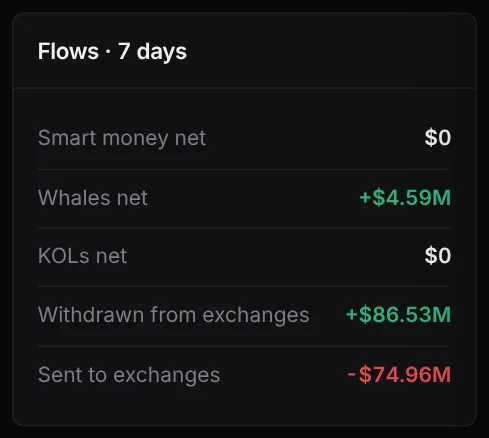
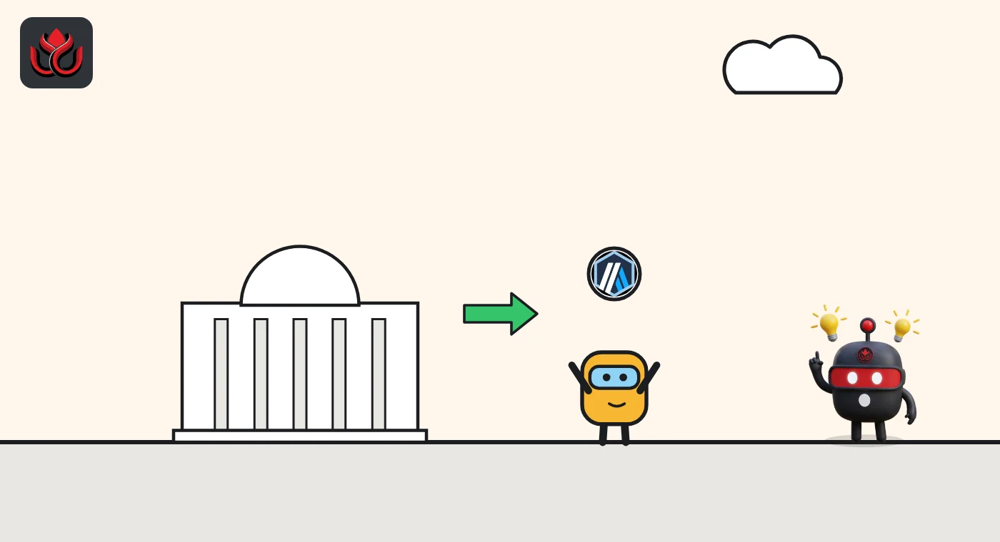

Sharks bought $850,000 of Arbitrum's ARB in a day. Whales added $4.59 million in a week
DeepSea's data shows big wallets buying ARB on Arbitrum while $11.6 million more ARB left exchanges than arrived over seven days. Two stock tokens also drew shark money.
Key points
- In the 24 hours to 12:38 a.m. ET on November 5, 2026, six shark wallets bought $850,274 of ARB on Arbitrum and sold $110,995, DeepSea's live feed shows.
- Over seven days, DeepSea counts whales as net buyers of $4.59 million of ARB, and $86.53 million of ARB left exchanges against $74.96 million sent in.
- Sharks also bought tokens tracking Circle and Robinhood shares on Arbitrum: $233,058 and $174,740.
 What DeepSea's data shows
What DeepSea's data shows
DeepSea's live feed adds up trades by wallets it tags as sharks (large, active traders). LC Insight read it at 12:38 a.m. ET on November 5, 2026. DeepSea does not name these wallets, so neither do we.
Over 24 hours, six sharks bought $850,274 of ARB, the token of the Arbitrum network, and sold $110,995 in 82 trades. That is about $739,000 net bought. The buying has grown through the week's checks: $59,017 at 12:35 a.m. on November 4, then $195,759 at 6:35 a.m.
DeepSea's ARB token page shows the same direction over seven days. Whales were net buyers of $4.59 million. Wallets withdrew $86.53 million of ARB from exchanges and sent in $74.96 million, so about $11.6 million more left than arrived. DeepSea shows no net smart money or KOL flow in ARB.

Data: DeepSea (desea.io), checked November 5, 2026, 12:38 a.m. ET.
Bets on ARB's price
The same page tracks perpetual futures, bets on price with no expiry date. Nine wallets hold $2.26 million of long bets (wins if ARB rises) and four hold $722,600 of shorts, so 76% of the tracked money is long. Average leverage is 9.7 times. DeepSea shows no shark positions here.
Stock tokens on Arbitrum
Sharks also traded tokens that track US shares. Two wallets bought $233,058 of rCRCL and sold $89,225. CoinGecko lists rCRCL as Circle Internet Group Tokenized Stock (Reality). One wallet bought $174,740 of rHOOD, listed as Robinhood Markets Tokenized Stock (Reality), and sold $124,528. One wallet sold $14,938 of rAAPL.

The numbers
Shark buying and selling of ARB over 24 hours, at three DeepSea checks.
Shark ARB trades on Arbitrum, 24-hour windows
US$ thousand
Source: DeepSea live feed, 24-hour shark aggregates, fetched November 4 and 5, 2026.
Why it matters
Coins leaving exchanges often go to private wallets or apps, which can mean less supply ready to sell. It is not proof of a plan. The buying also came in bursts: DeepSea showed no shark ARB trades at all in the last hour before our check. CoinGecko showed ARB at $0.1628 at 12:55 a.m. ET, up 1.6% in 24 hours, with a market value of $1.12 billion.
LC Insight analysis
This section is our reading of the facts above, not a statement of fact.
- We think the signal is that three data sets agree: sharks over a day, whales over a week and exchange flows all lean toward buying ARB. The amounts are still small next to a $1.12 billion token.
- The stock tokens are a small side story, a few hundred thousand dollars from one or two wallets. We would not read them as a trend yet.
What's next
- Whether shark ARB buying holds above $500,000 net in the next 24 hours
- Whether ARB keeps leaving exchanges on DeepSea's seven-day count
- How the 76% long share in ARB perpetuals changes
Disclaimer. This article is based on public information and the sources listed below as of the update time shown. It is for information only and is not investment, legal or tax advice. Figures may change as companies and authorities publish new data.
Sources
- DeepSea live feed, 1-hour and 24-hour shark aggregates (fetched November 5, 2026, 12:38 a.m. ET; comparison snapshots November 4, 2026, 12:35 a.m. and 6:35 a.m. ET)
- DeepSea, ARB token page: 7-day flows and long/short (fetched November 5, 2026, 12:40 a.m. ET)
- CoinGecko, Arbitrum (ARB) price and market cap (November 5, 2026, 12:55 a.m. ET)
- CoinGecko, rCRCL and rHOOD token listings, Arbitrum contracts (November 5, 2026, 12:41 a.m. ET)